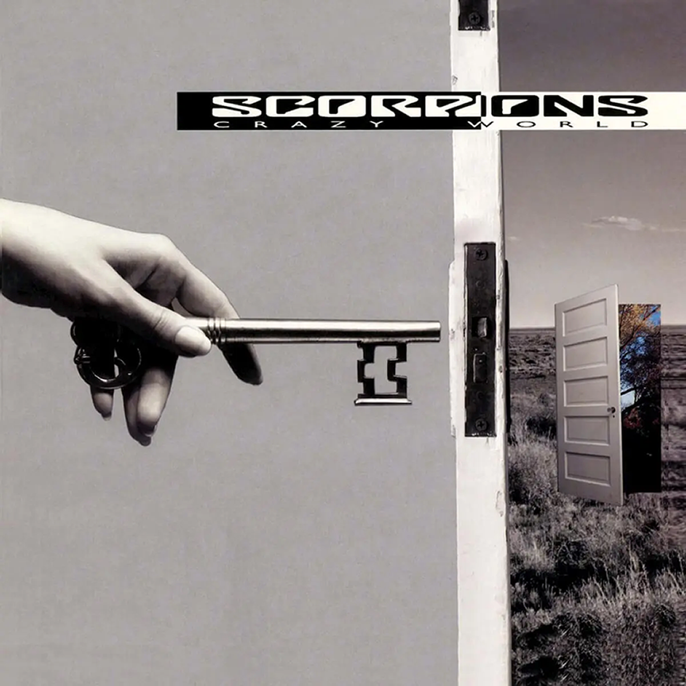

|
Video Original |
Letra
I follow the Moskva down to Gorky Park
Listening to the wind of changebr An August summer night, soldiers passing by
Listening to the wind of change
The world is closing in
And did you ever think
That we could be so close like brothers?
The future's in the air, I can feel it everywhere
I'm blowing with the wind of change
Take me to the magic of the moment
On a glory night
Where the children of tomorrow dream away (dream away)
In the wind of change
Mh-mmh
Walking down the street
And distant memories are buried in the past forever
I follow the Moskva and down to Gorky Park
Listening to the wind of change
Take me (take me) to the magic of the moment
On a glory night (a glory night)
Where the children of tomorrow share their dreams (share their dreams)
With you and me (with you and me)
Take me (take me) to the magic of the moment
On a glory night (a glory night)
Where the children of tomorrow dream away (dream away)
In the wind of change (the wind of change)
The wind of change blows straight into the face of time
Like a storm wind that will ring the freedom bell for peace of mind
Let your balalaika sing what my guitar wants to say (say)
Take me (take me) to the magic of the moment
On a glory night (a glory night)
Where the children of tomorrow share their dreams (share their dreams)
With you and me (you and me)
Take me (take me) to the magic of the moment
On a glory night (a glory night)
Where the children of tomorrow dream away (dream away)
In the wind of change (the wind of change).
Album
